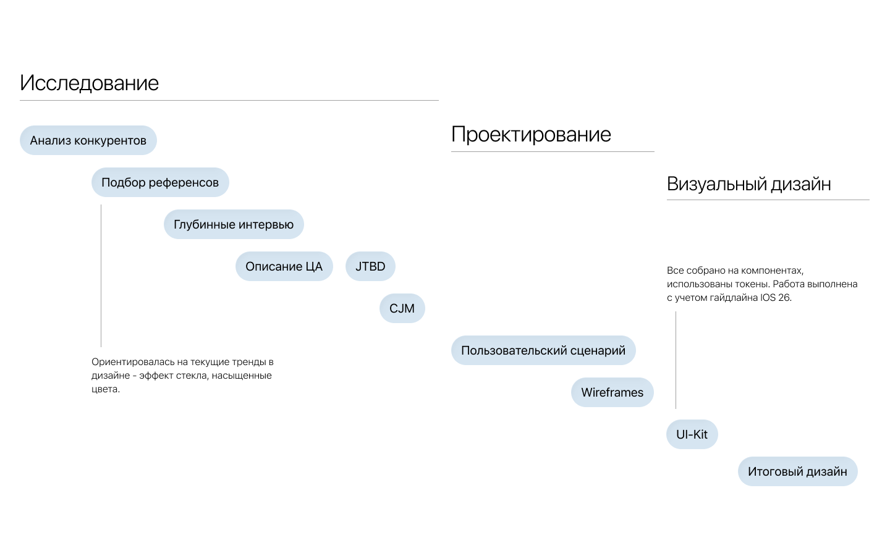
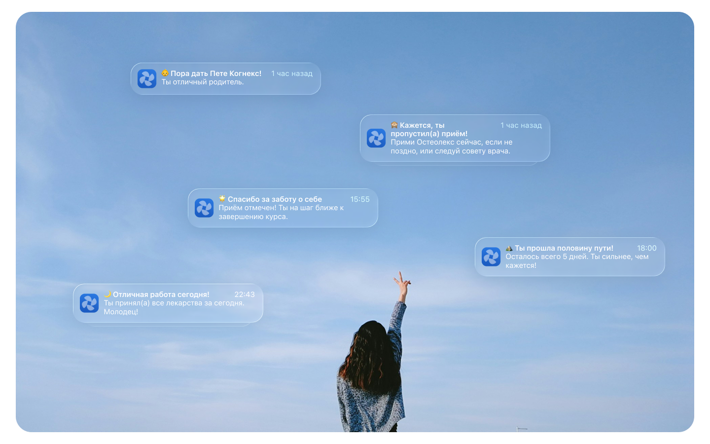
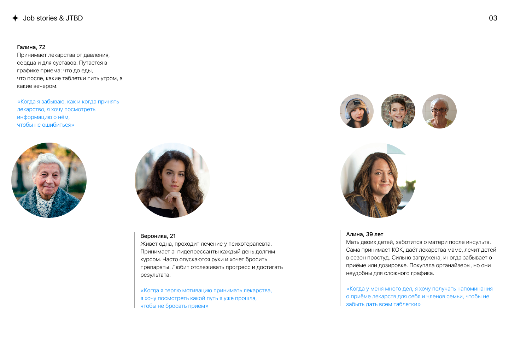
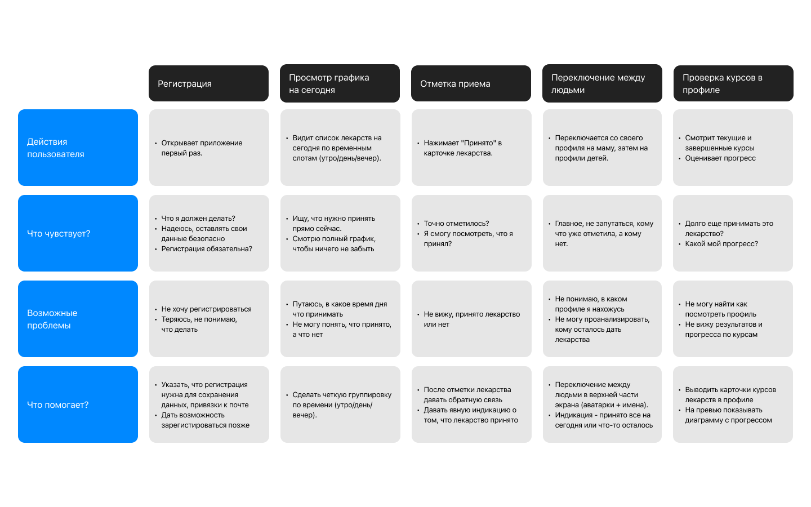
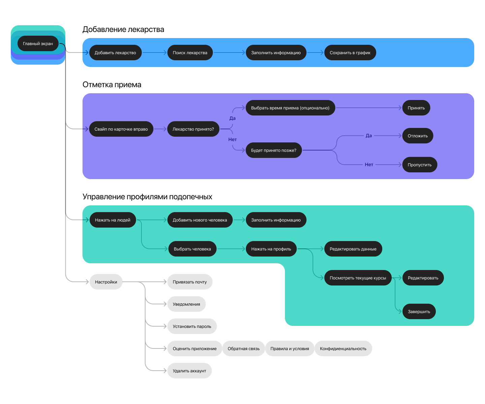
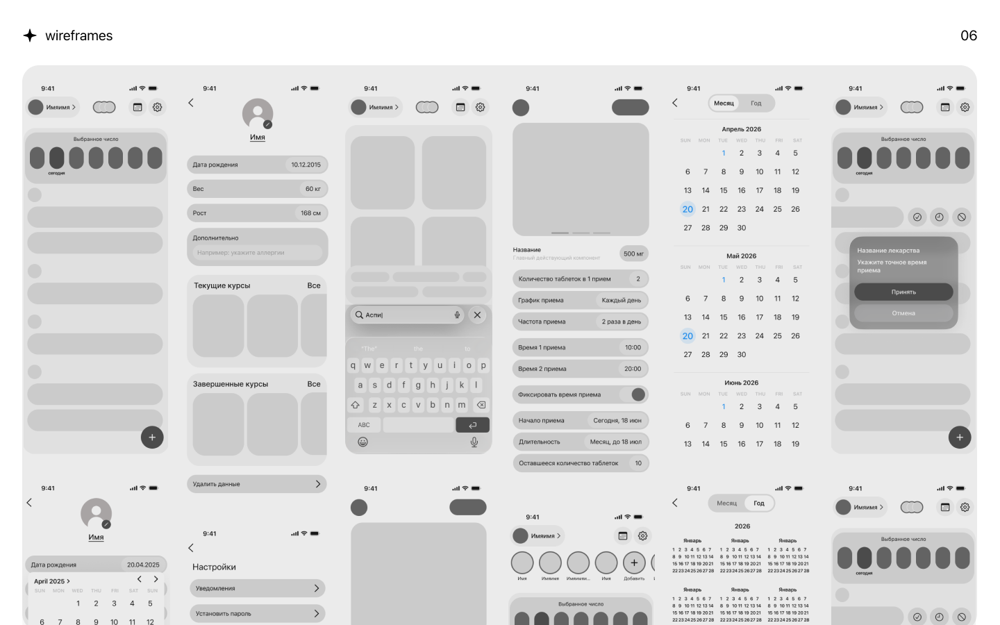
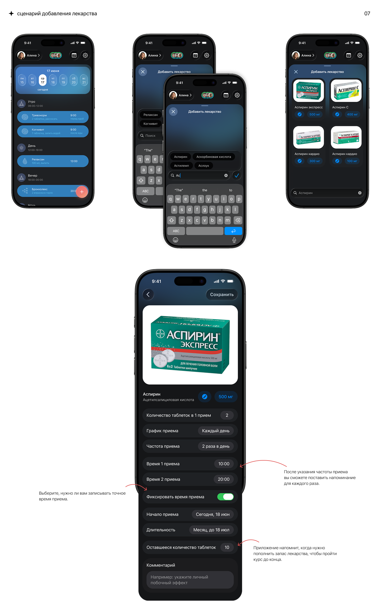
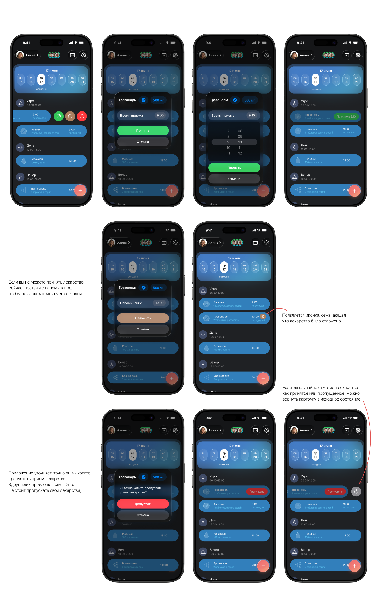
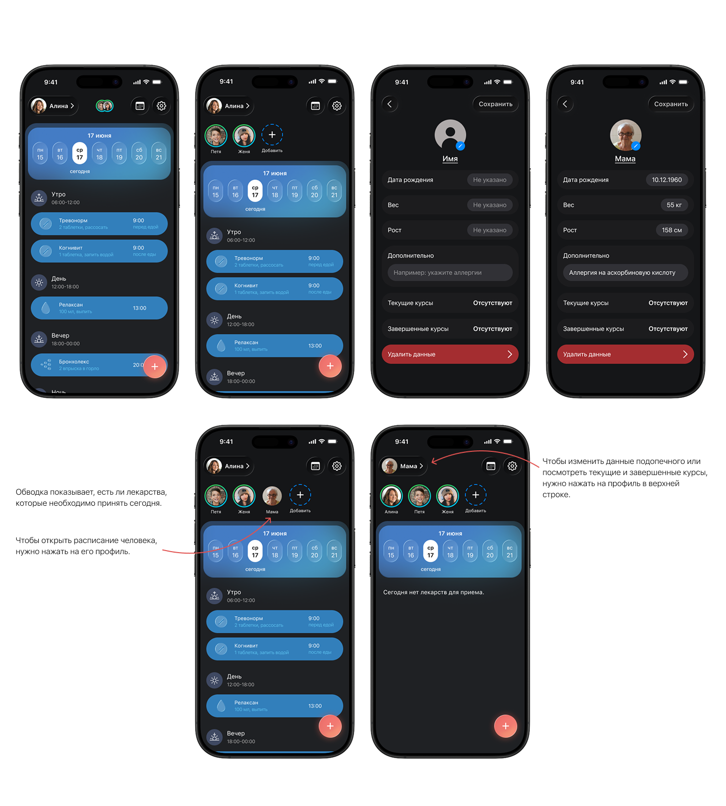

Mendi — приложение для отслеживания приема лекарств
Проблема: Пациенты клиники путаются в графике приема нескольких препаратов, пропускают дозы и бросают лечение раньше времени.
Задача: Разработать минималистичный и мотивирующий интерфейс, который поможет пользователям и их близким соблюдать график лечения.
Ключевые требования
- Добавление лекарств из базы данных компании
- График приёма с возможностью отмечать дозы
- Отслеживание прогресса по курсам лечения
- Добавление нескольких членов семьи со своими графиками
- Интуитивная навигация и визуальная эстетика

1. Бенчмаркинг
Прямые конкуренты
| Название | Юзабилити | Визуал |
|---|---|---|
| Мои таблетки | Пользователя всегда сопровождают подсказки, он не теряется и понимает, что делать. Лекарство легко добавить — всего за 3 шага. Нельзя отметить лекарство пропущенным — приложение вынуждает отметить как принятое или завершить курс. Нет графика, но есть шкала прогресса. Невозможно добавить другого человека. Нет возможности добавить комментарий. | Все изображения в одном стиле. Минимализм. Соблюдён гайдлайн iOS. Акцентные цвета приятные, понятно, какой компонент активный. Расположение элементов местами хромает — текст и иконки накладываются на изображение. |
| MediSafe | Слишком много экранов для заполнения информации. Нет отслеживания прогресса — непонятно, когда будет последний экран. Большая вариабельность: частота, время, продолжительность, напоминания о том, что таблетки заканчиваются. Выпадающий список при поиске. Календарь показывает только неделю, месяц нельзя. Лекарство можно отметить как принятое (с указанием времени), перенести или пропустить. | Приятный, но простой и плоский. Аккуратный и понятный, но эстетически не выделяется. |
| MyTherapy | Долгое добавление лекарства. Есть лишние пункты (диагноз). Отсутствует календарь. Есть подсказки для пользователя. | Картинки неправильного формата — растянуты. Ошибки в тексте (возможно, некорректный перевод). Анимации приятные, выбор цветов хороший. |
Косвенные конкуренты
Flo. Мягкая пастельная палитра (розовый, фиолетовый). Главный экран — хаб с ключевыми данными. Крупные понятные карточки. Мотивирует через прогнозы и статистику. Тёплый, поддерживающий тон.
Todoist. Приложение для управления задачами. Вдохновляющие аспекты: чистая иерархия (проекты → подзадачи → теги), интуитивная система приоритетов (цветные флаги), быстрый ввод задач через естественный язык. Минималистичный интерфейс без лишнего визуального шума, где фокус всегда на контенте. Мотивирует через статистику продуктивности (карма) и ежедневные цели.
Выводы
- Прямые конкуренты перегружены экранами и формами, нет единого «хаба» с ключевой информацией
- Ни у кого нет удобного переключения между несколькими пациентами
- Отсутствует гибкость в настройке времени приёма (опционально)
- Мотивация и поддержка пользователей реализована слабо
- Возможность комментирования (побочные эффекты, заметки) отсутствует
- Косвенные конкуренты показывают, что минимализм + тёплый тон = доверие и удержание
2. Глубинные интервью
Провела 3 глубинных интервью с пользователями, чтобы проверить гипотезы и понять, чего люди ждут от приложения. Респонденты были выбраны из разных возрастных и социальных групп — это помогло собрать полную картину потребностей и увидеть общие боли на пересечении аудиторий.
Гайд интервью
Знакомство и контекст
- Расскажите немного о себе: чем занимаетесь, как проходит обычный день?
- Приходилось ли вам принимать лекарства курсом? Как долго?
- Принимаете ли вы сейчас несколько препаратов одновременно?
Опыт приёма лекарств
- Как вы сейчас запоминаете, что и когда нужно принять?
- Случалось ли пропускать приём или принимать лекарство дважды? Из-за чего?
- Что вы чувствуете, когда понимаете, что пропустили дозу?
- Бросали ли вы курс раньше времени? Почему?
Организация графика
- Пользовались ли вы приложениями, заметками или будильниками для контроля приёма?
- Что было удобно, а что раздражало?
- Важно ли вам видеть прогресс по курсу лечения?
- Насколько важно учитывать, как принимать лекарство (до / во время / после еды)?
Забота о близких
- Помогаете ли вы кому-то из близких следить за приёмом лекарств?
- Как вы это делаете и с какими трудностями сталкиваетесь?
- Было бы полезно вести несколько графиков в одном приложении?
Мотивация и тон
- Что помогает вам не бросить лечение?
- Как вы относитесь к напоминаниям и словам поддержки от приложений?
- Хотелось бы оставлять заметки о самочувствии или побочных эффектах?
Завершение
- Каким было бы идеальное приложение для контроля приёма лекарств?
- Чего вам не хватало в тех решениях, что вы пробовали?
Результаты интервью
Все гипотезы подтвердились!
- Пользователи выбрали заполнение всей информации о лекарстве на одном экране. Пошаговый сценарий показался им медленным.
- Пользователи хотят оставлять заметки к лекарствам, например, свои побочные эффекты.
- Пользователи хотят сами решать, для каких препаратов указывать время приема (например, есть те, которые надо принимать каждые 6 часов). Функция будет реализована опционально.
- Дружелюбный тон и слова поддержки очень ценятся. Поощрения после завершения курса и во время приема помогут не бросить лечение на полпути.
Инсайты: Респонденты упомянули, что важно указывать, когда принимать лекарство (до/во время/после еды) и как (рассасывать, глотать, растворять).







